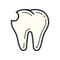
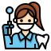
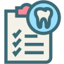
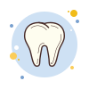
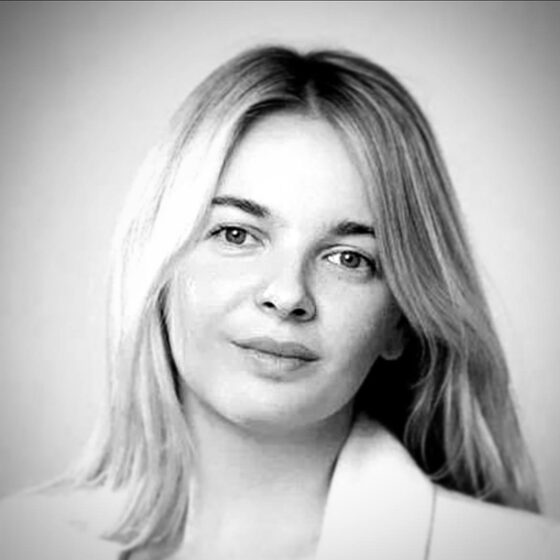
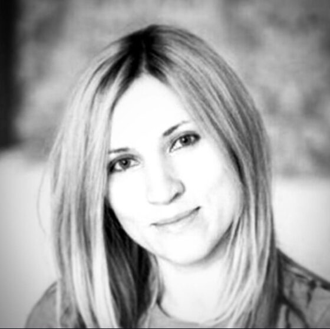
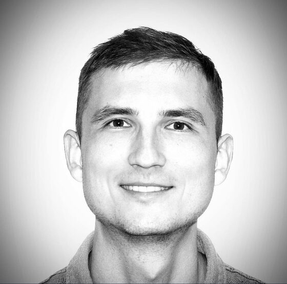
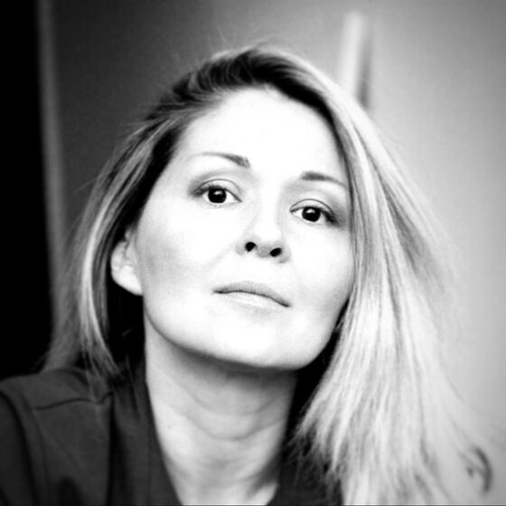
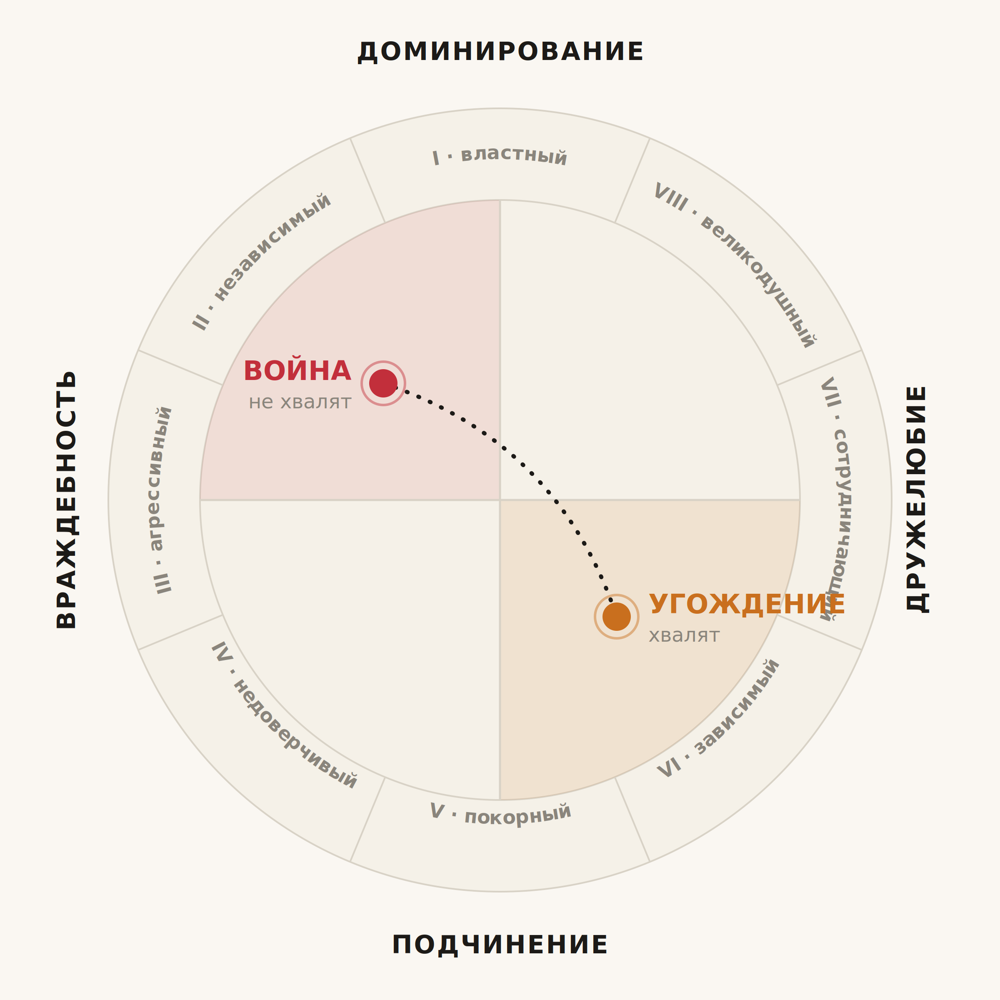

и они портят тебе улыбку
хочешь это изменить?
Психостоматология №1
О проекте Психостоматология №1
За проектом стоят обычные люди, которые не смогли решить свои проблемы с зубами при помощи классической стоматологии и пошли дальше.
В 2021 году мы пришли к тому, что коммуникация в отношениях влияет на здоровье зубов. На основе научных исследований мы создали уникальную методику — психостоматологическую диагностику (авторский сертификат серия ВВ № 001/06/24), которая помогает решать стоматологические проблемы через работу с отношениями.
В 2025 году мы подтвердили связь коммуникации и проблем с зубами через когнитивное исследование на ЭЭГ. И поэтому мы работаем с зубами через отношения, а с отношениями - через зубы, что уже давно позволяет нам:
❤️🩹 сохранять браки, 💦 улучшать отношения внутри семьи,
🦷 спасать зубы, приговоренные к удалению, 🥴 помогать избавляться от зубной боли, свищей и тормозить процессы деструкции. ❤️🦷
На текущий момент исследовательская работа направлена на создание метода естественной регенерации зубных тканей.
Особенности Психостоматологии №1

Проблемы с зубами = проблемы с коммуникацией
Наши исследования показали удивительную вещь: проблемы с зубами и прикусом — это отражение того, как мы проявляемся с другими людьми. Задумайтесь: не появилась ли ваша зубная боль после сложного разговора или в период напряжённых отношений? И пока мы не наладим эти отношения, даже самое качественное лечение зубов не решит проблему полностью.

Наши исследования
- Исследование по передним верхним центральным резцам - сайт психостоматология.рф
- Исследование связи сепарации с уровнем подверженности манипуляциям и зубной деструкции - здесь
- Исследование психологических методов регенерации зубных тканей с 2020 по настоящее время

Психостоматологическая диагностика бесплатно
Ответьте честно на 3 вопроса:
1. Есть ли в вашей жизни человек, которому вы постоянно стараетесь угодить, но никогда не чувствуете, что делаете достаточно?
2. Есть ли близкие люди, которых вы критикуете, считаете "неправильными" или чувствуете себя выше их, хотя они вас принимают?
3. Чувствуете ли вы, что никогда не дотягиваете до своего потенциала и что-то постоянно "не так" с вами?
➡️ Если вы ответили "да" хотя бы на 2 вопроса —
подумайте: а что, если зубы разрушаются из-за всего этого? Что вы будете делать тогда?
Приходите на бесплатную диагностику и узнайте, какое именно поведение может влиять на вашу проблему, как в одну, так и в другую сторону.

Психологическая база
Вы никогда не задумывались, почему оба периода роста зубов у человека совпадают с периодами сепарации? Хотите поглубже узнать о том, что лежит в основе проблем с зубами через призму психологии? Специально для вас - 4 эфира про зубы через призму таких ученых, как: Леонтьев, Бандура, Боулби, Фестингер, Кохут, Винникот и др.
Если в вашей жизни есть проблемы с зубами - вы не прошли сепарацию и не можете быть собой в присутствии других людей.
Интересуетесь психологией и зубами - пройдите опросники по зубам, с которыми чаще всего приходят на диагностику! (опросники находятся в комментарии к посту в телеграм канале Психостоматологии №1 - здесь)
Знаешь, почему проблемы с зубами возвращаются снова и снова?
Ты живешь в мире, где есть только два типа людей: для первых ты стараешься, но постоянно не дотягиваешь, вторым важна твоя улыбка, но ты считаешь их "ниже" себя.
Чем больше зубов разрушено — тем глубже ты в этой игре. Нравится?
Стоимость
вся работа происходит онлайн
Бесплатная психостоматологическая диагностика
Проводится для следующих случаев:
- кариес с наличием болевых ощущений и без
- кривизна зуба
- раскол/скол зуба
- зубной камень
- периодонтит
- пародонтит
- стоматит
- адентия
- спадание моста
- налёт
- запах
- киста
- гранулема, свищ
- проблемы прикуса
- рецессия десны
- травматичность десны
- кровоточивость
- и другие беспокоящие вопросы, в т.ч. по зубам детей.
! если тот или иной вопрос по зубам не вызывает у вас дискомфорта, диагностика вам не подходит !
Бесплатная диагностика предназначена для поиска причин происходящего с зубами/десной/челюстью, продолжительность до 20 минут.
Что вы получите:
- понимание проблемного паттерна коммуникации в повторяющейся стрессовой ситуации;
- понимание целевого паттерна коммуникации в стрессовой ситуации;
- рекомендации по развитию целевого поведения.
Формат проведения: видео созвон с записью видео (видео может быть использовано на ресурсах психостоматологии). Если Вас смущает публичный формат, то есть возможность провести диагностику без записи видео. Стоимость такой диагностики 1000 рублей.
Диагностику проводит: руководитель психостоматологии.
Для записи - писать в телеграм
Первичная консультация
Психологическая консультация по беспокоящему состоянию/симптому зубов или челюсти продолжительностью 1 час. За это время вы сможете:
- Проработать свой запрос по волнующему вопросу с зубами
- Протестировать передовые психостоматологические техники для работы с зубами и отношениями.
Стоимость: 2500 руб* (повторные консультации - 5000 руб.)
Формат: онлайн**
Консультацию проводит: специалист психостоматологии.
*в случае отсутствия готовности к психостоматологической работе или психологического сопротивления к работе консультация прерывается, стоимость возвращается в полном объема.
** консультация проходит в онлайн формате и происходит над одним конкретным симптомом, который ощутимо беспокоит в моменте.
Для записи - пишите в телеграм
Расширенная первичная консультация
Психологическая консультация по беспокоящим состояниям/симптомам зубов и/или челюсти продолжительностью до 2х часов. За это время мы можем:
- Продиагностировать все ваши вопросы по зубам и найти все моменты в отношениях, которые с ними связаны.
- Совместно составить дорожную карту действий для достижения желаемых результатов.
- Протестировать передовые психостоматологические техники для работы с зубами и отношениями.
- дополнительно: медитация для самостоятельной работы с болью/дискомфортом
- дополнительно: чтение КТ снимков при наличии
- дополнительно: месячная подписка на психостоматологическое сопровождние
Стоимость: 30 000 руб
Формат: онлайн (или офлайн с дополнительной оплатой)
Консультацию проводит: руководитель психостоматологии, Антон Казаков
Для записи - пишите в телеграм
Психостоматологическое сопровождение (лучший вариант для работы с зубами)
Психостоматологическая работа с зубами через работу с коммуникацией в отношениях (в групповом или индивидуальном форматах)
- для тех, кто решительно нацелен на улучшение состояния зубов через работу с отношениями;
- в онлайн формате, в группе единомышленников, с поддержкой специалистов психостоматологии;
- для того, чтобы развить эмоциональную устойчивость в любой коммуникации, научиться переводить стресс оппонента в спокойствие и уметь выстраивать конструктивную коммуникацию с любым человеком.
Сопровождение доступно только после бесплатной диагностики.
Происходит в групповом формате при участии всех специалистов Психостоматологии №1.
Стоимость: от 9000 руб / месяц
Возможно индивидуальное сопровождение.
Сотрудничество для стоматологов, ортодонтов и клиник
Психостоматологическая диагностика вашего клиента на предмет первопричин проблемы
- чтобы было понятно, почему происходят рецидивы и как их избежать
- чтобы прояснить необъяснимые с точки зрения классической стоматологии процессы
- чтобы результаты вашей работы сохранялись дольше
- чтобы добавить профессионализма своему подходу
- чтобы провести научное исследование на тему совместного подхода в работе с зубами
Вы можете быть одними из первых, кто внедрит в свою работу психостоматологический подход, а можете подождать пока это станет мейнстримом.
За каждым больным зубом - одна и та же динамика:
обвинять обычных людей в том, что они "плохие",
и стараться для тех, кто тебя использует.
Ты считаешь себя выше "неправильных" людей,
и постоянно ищешь одобрения тех, кому "служишь".
За это ты платишь трижды: зубами, отношениями и стоматологу 🤦♀️
Отзывы наших клиентов
А ещё был случай с тем, как мне предложили срочную операцию. (продолжение по ссылке)
Ликбез по зубам и отношениям.
Хотите знать, что объединяет всех людей с проблемами по зубам? У них одно прошлое, одно настоящее и одно будущее. Они все предпочитают быть хорошими в глазах кого угодно, кроме своей семьи. И для этого они каждый день делают то, что рождает в них недовольство.
Недовольные за счет своего собственных действий и решений люди, с проблемами по зубам живут за счет своих нарциссических расширений и внешней валидации.
Так создаются удобные обществу люди, которые разрушают зубы и близкие отношения своими собственными руками (словами).
Заканчивай быть правильным и недовольным. Пора вернуть себе улыбку и начать создавать классные отношения с теми, кто тебя давно любит.
Команда Психостоматологии №1
психологи с большим опытом работы над зубами и коммуникацией, которая под ними скрывается

Когда я увидела, как зубы реагируют на изменения в отношениях быстрее, чем на любую пасту, я поняла: улыбка начинается не во рту, а в лимбической системе. Поэтому моя миссия — показать, как наполнение ресурсом запускает естественные процессы регенерации тканей.

За каждым 'безнадежным' зубом я вижу непрожитую боль в отношениях. Но когда человек получает поддержку в изменении коммуникативных паттернов, происходит то, что стоматологи называют чудом — зубы перестают разрушаться.

Я начал замечать, что после каждого сложного, но честного разговора с близкими люди чувствуют облегчение не только душевное, но и физическое. Поэтому я стал внимательнее изучать, как наши слова влияют на тело. Но только работая с психостоматологией, я понял глубинную истину: здоровая коммуникация — это фундамент не только счастливых отношений, но и здоровой улыбки.

Каждый больной зуб — это трещина в ваших отношениях с близкими. Поэтому никакая пломба не удержится там, где сохраняется токсичная коммуникация. Восстанавливая отношения, мы запускаем процессы регенерации, которые стоматология считает невозможными.
Блог Психостоматологии №1
В восьми статьях блога собрана вся информация о том, что мы находим за проблемами с зубами. Информация может вызывать сопротивление и другие противоречивые чувства.

Как с зубами, так и с людьми
🦷 Что общего между удалением зуба и расставанием с партнером? Почему мы лечим зубы, но продолжаем испытывать боль? И самое интересное: почему люди с похожими проблемами в отношениях часто имеют похожие проблемы с зубами?

Нейрофизиология отношений
В современном мире люди часто строят отношения интуитивно, опираясь на противоречивые советы и устаревшие представления. Однако нейрофизиология предлагает научное объяснение тому, как наш мозг влияет на построение межличностных связей.

Работа с зубами через отношения
То, что происходит с вашими зубами – не случайность и не генетика. Узнайте настоящую причину разрушения зубов, о которой молчат стоматологи и которую не замечают психологи.

3 нарциссические манипуляции для роста зубов
В этой статье о том, как не стать жертвой нарциссических манипуляций, а использовать их для личного роста и здоровья своих зубов.

Признаки лимбической коммуникации
Почему умные люди врут себе? Когда вместо решения проблем вы находите гениальные отговорки – это шепчет лимбическая система. Она защищает вас от боли... и от реальных изменений в жизни.

От малодушия к смирению. Сокровища и ядовитые змеи.
Бог, змеи и ваши зубы: почему избегание проблем разрушает не только отношения, но и улыбку? Древняя притча о выборе между комфортом и ростом раскрывает, как ваша лимбическая система саботирует счастье. Путь героя или жизнь жертвы – что выберете вы?

Страшная история 21 зуба. Папаша-то твой козлом был.
О чем говорят проблемы с центральным верхним левым резцом у детей и взрослых. Статья может вызывать негодование, раздражение, возмущение и другие живые эмоции, которые будут говорить об актуальности темы для читающего.

Зубы и бесконечная борьба зла с добром.
Ваши больные зубы — это карта семейных предательств. Каждый кариес показывает, кого вы защищаете, а кого принесли в жертву. Готовы узнать, кто превратил вас из льва в послушную овцу, разрушающую свое здоровье?

Третья сепарация
В жизни каждого человека существует два периода сепарации. В оба этих периода у человека растут зубы. Так задумано природой и это крайне важно для психического здоровья человека. Но что, если кому-то это невыгодно?

Инструкция по эксплуатации "БЕЗЗУБЫХ".
Посылаешь тех, кто не нравится, и защищаешь тех, кто хвалит? Если у тебя еще и не все зубы свои и здоровы - вот инструкция по манипуляции тобой.

Закрой свой рот! Ты слишком ...
«Тебе показалось», «не выдумывай», «ничего страшного» — так у детей отбирают право быть собой. Статья про эпистемическое насилие: механизм без крика и ремня, который ломает сепарацию, передаётся через поколения и виден на зубах раньше, чем в психике.